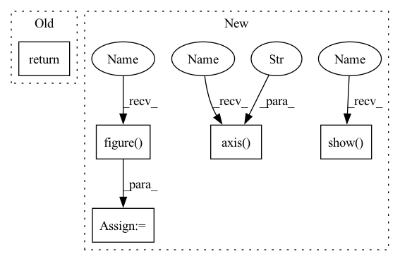

Pattern ID :7286

Before Change
pt += np.array([d_x, d_y])
candidates.append(pt)
return np.unique(np.asarray(candidates), axis=0)
@staticmethod
def get_candidate_gt(target_candidate, gt_target):
After Change
candidates = np.unique(np.asarray(candidates), axis=0)
if viz:
fig = plt.figure(0, figsize=(8, 7))
fig.clear()
for centerline_coords in centerline_list:
visualize_centerline(centerline_coords)
plt.scatter(candidates[:, 0], candidates[:, 1], marker="*", c="g", alpha=1, s=6.0, zorder=15)
plt.xlabel("Map X")
plt.ylabel("Map Y")
plt.axis("off")
plt.title("No. of lane candidates = {}; No. of target candidates = {};".format(len(centerline_list), len(candidates)))
plt.show(block=False)
return candidates
@staticmethod
In pattern: SUPERPATTERN
Frequency: 3
Non-data size: 5
Instances
Fragment ID: 24346007
Project Name: henry1iu/tnt-trajectory-prediction
Commit Name: 158b8908496b1bcd8d780c31b641d395ef261a2f
Time: 2021-07-28
Author: liu.jb.henry@gmail.com
File Name: core/util/preprocessor/base.py
M Class Name: Preprocessor
N Class Name: Preprocessor
M Method Name: lane_candidate_sampling(3)
N Method Name: lane_candidate_sampling(2)
M Parent Class: object
N Parent Class: object
M File Name: core/util/preprocessor/base.py
N File Name: core/util/preprocessor/base.py
M Start Line: 139
M End Line: 158
N Start Line: 138
N End Line: 174
'>
Before Change
def similarity_plot(embedding, label):
return 0
After Change
cosine_sim[cosine_sim < 1e-5] = 0
// figure
fig = plt.figure()
sns.heatmap(data=cosine_sim, cmap="RdBu_r", vmin=-1, vmax=1)
plt.axis("off")
// plot
if show_fig:
plt.show()
return fig
'>
Fragment ID: 24346009
Project Name: yueliu1999/awesome-deep-graph-clustering
Commit Name: d1692c202441c6961a5e075b21c4df27bdfca024
Time: 2021-12-11
Author: 41297969+YueLiu-coder@users.noreply.github.com
File Name: visualization.py
M Class Name: AnonimousClass
N Class Name: AnonimousClass
M Method Name: similarity_plot(4)
N Method Name: similarity_plot(2)
M Parent Class:
N Parent Class:
M File Name: visualization.py
N File Name: visualization.py
M Start Line: 54
M End Line: 55
N Start Line: 54
N End Line: 86
'>
Before Change
pt += np.array([d_x, d_y])
candidates.append(pt)
return np.unique(np.asarray(candidates), axis=0)
@staticmethod
def get_candidate_gt(target_candidate, gt_target):
After Change
candidates = np.unique(np.asarray(candidates), axis=0)
if viz:
fig = plt.figure(0, figsize=(8, 7))
fig.clear()
for centerline_coords in centerline_list:
visualize_centerline(centerline_coords)
plt.scatter(candidates[:, 0], candidates[:, 1], marker="*", c="g", alpha=1, s=6.0, zorder=15)
plt.xlabel("Map X")
plt.ylabel("Map Y")
plt.axis("off")
plt.title("No. of lane candidates = {}; No. of target candidates = {};".format(len(centerline_list), len(candidates)))
plt.show(block=False)
return candidates
@staticmethod
'>
Fragment ID: 24346008
Project Name: henry1iu/tnt-trajectory-predition
Commit Name: 158b8908496b1bcd8d780c31b641d395ef261a2f
Time: 2021-07-28
Author: liu.jb.henry@gmail.com
File Name: core/util/preprocessor/base.py
M Class Name: Preprocessor
N Class Name: Preprocessor
M Method Name: lane_candidate_sampling(3)
N Method Name: lane_candidate_sampling(2)
M Parent Class: object
N Parent Class: object
M File Name: core/util/preprocessor/base.py
N File Name: core/util/preprocessor/base.py
M Start Line: 139
M End Line: 158
N Start Line: 138
N End Line: 174